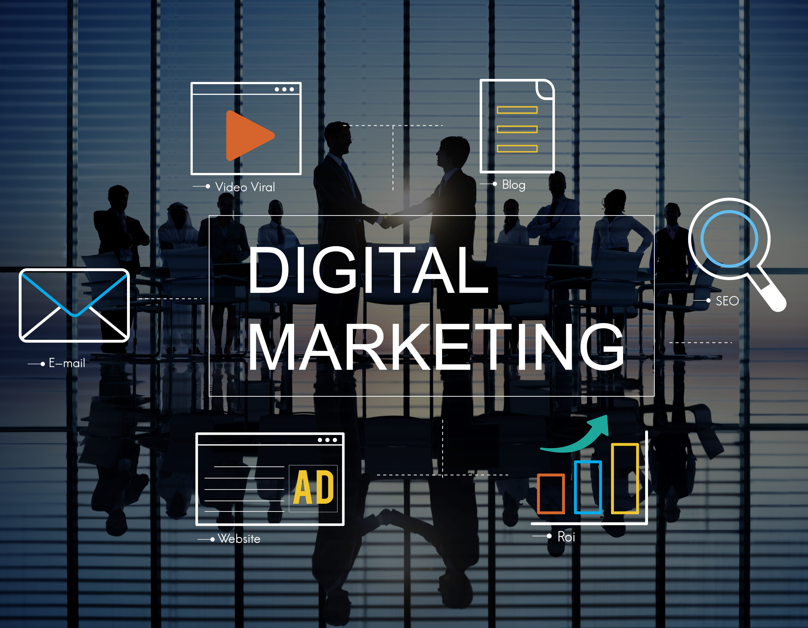

Project
Fakugesi – Digital Innovation and Web Development
Digital innovation and web development support for a future-facing creative technology platform.
InnovationWebDigital
Selected work across education, research, civic innovation, publishing, and African digital storytelling.
Digital innovation and web development support for a future-facing creative technology platform.
Digital management support for platform presence, publishing workflows, and audience-facing updates.
Digital strategy and implementation for a technology challenge connecting innovators and partners.

Digital management and implementation support for challenge communications and delivery.
Podcast production for civic research conversations and election-focused public engagement.
Production and publishing support for research-led stories built for public understanding.
The Digital Afrikan provides a unique, innovative and creative service. They optimised and published our content with The Daily Maverick as well as on TikTok, Linkedin and Whatsapp.
As a research centre, Wits Tayarisha needed a media partner to expose our research to the world and invite public engagement. The Digital Afrikan delivered across curation, advising, and media platforms.